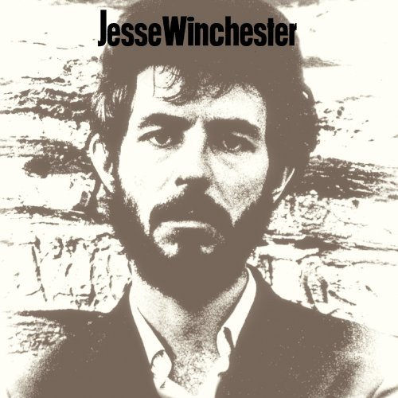

“Quiet About It”
A song written by Jesse Winchester in 1970
05 May 2003 · 3 min read
To Listen: Apple Music
In this recording, Winchester shows just how much distance can be covered in a song that clocks in at less than two and a half minutes.
The first verse starts optimistically, with a suitably bouncy organ pumping in the background. “Be of good cheer,” the singer exhorts. “It’s all in His plan. He’s walking with us, and He speaks through every man.”
The mood darkens, though, the change signaled by the drums and Robbie Robertson’s whining electric guitar.
But I have this notion —
Call it my fear —
That I will die alone,
And even He won’t be there.
So we now have the conflict defined, between a simple, traditional, religious faith and darker doubts about the existence of God and the meaning of human life.
The drums and guitar now get louder, symbolizing the intensity of the conflict, and suggesting that some sort of resolution must be approaching. “But when I feel that way, I thirst and I want to shout.”
Drums and cymbals crash. “But trust me, Lord, to keep ….” Here the drums pause dramatically, emphasizing the words to come. The guitar make a sinuous noise, quieter now but still menacing, not sacrificing any of its threatening power. Then Winchester tells the Lord what it is he can be trusted to remain: “… quiet about it.” And suiting action to words, the singer says nothing more. The drums turn the corner for us, and we launch into another verse and chorus, paralleling the structure of the first.
Yes I am lost,
But He is leading me home.
He’s my companion
When my friends have up and gone.But still I get lonely,
And sometimes I doubt.
I want to do right,
And it seems like only wrong gets out.And when I feel that way…
Then I thirst, and I want to shout.
Trust me Lord to be…
Quiet About It.
The song then ends with a slow fade, both Winchester’s voice and Robertson’s guitar restlessly improvising, contained but still potent.
So what has Winchester done here? How has he resolved this conflict between brightest faith and darkest doubt? Not through any simple suppression of his fears, certainly. The persistent menace of Robertson’s guitar — if nothing else — makes this clear. Next, note the subtle irony in the singer’s request to God: “Trust me, Lord.” This turns the tables a bit, doesn’t it? We’ve gone from the issue of the singer having faith in God to God having a certain amount of faith in the human singer. This shift is significant: it raises the singer to the level of a partner, and not just a meek follower.
And then the full line: “Trust me, Lord, to keep quiet about it.” What sort of quiet is the singer talking about? Not a cover-up sort of quiet, trying to deny the existence of the conflict, or the singer wouldn’t be expressing all this in a song to start with. No, what the singer delivers is a decision to carry on without any whining or unnecessary dramatics. “I doubt,” he says, “but I will carry on as if I didn’t.” This is not blind faith. This is an act of free will, a conscious decision to act as if God existed, whether he does or not. It is the sort of decision that brings up images from Ernest Hemingway’s novels, or Howard Hawks’ films, or of Albert Camus’ protagonist in The Plague.
Quite an accomplishment for just under two and a half minutes.
Originally published at ReasonToRock.com